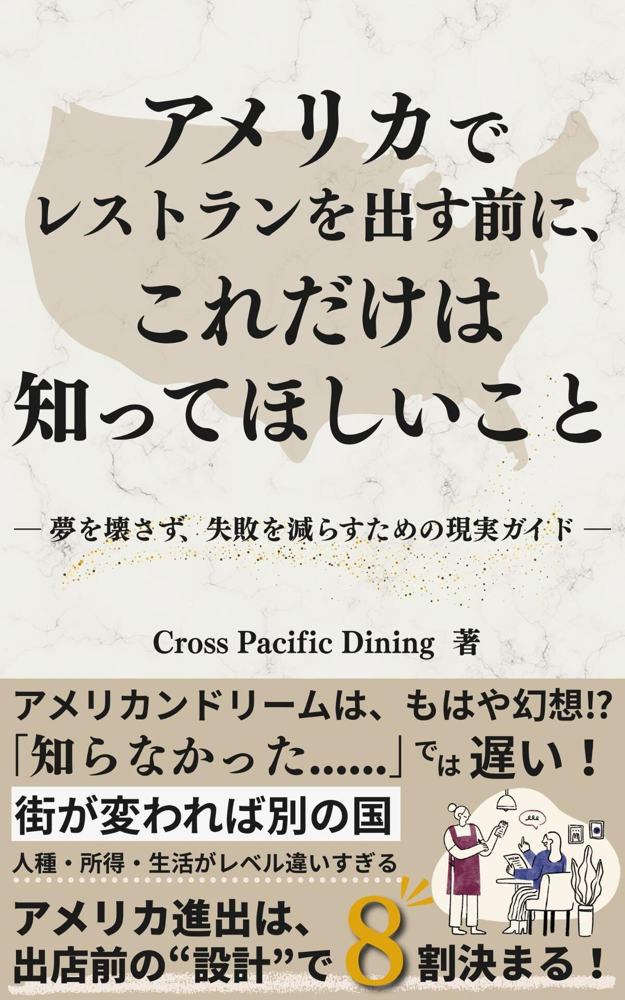

ロサンゼルス在住。
米国レストランチェーンの開発・運営に約10年。
日本の飲食企業のアメリカ進出を、
現場の視点で支援します。
Based in Los Angeles.
A decade of experience in U.S. restaurant chain
development & operations.
Supporting Japanese F&B companies
entering the American market.
日本には、世界に届けるべき
素晴らしい「食」がまだまだあります。
しかし、情熱だけでは
海を越えられない。
知らなかったせいで、
夢が壊れてしまうことがある。
私たちは、現場を知る者として、
日本の飲食企業が
正しい設計でアメリカに挑戦し、
折れずに事業を続けていける
環境を作ります。
Japan has incredible food
that the world deserves to experience.
But passion alone
can't cross the ocean.
Too many dreams are lost
simply because of what wasn't known.
As those who've been in the field,
we help Japanese F&B businesses
enter America with the right strategy
and build something that lasts.
飲食開発のプロが終日同行する
完全プライベート視察。
立地・原価・オペレーションを
現場で解説し、
Go / No-Go判断まで一緒に出します。
A fully private study tour
with an F&B development expert.
We break down location, cost structure,
and operations on-site — ending with
a Go / No-Go decision together.
「今、視察に行くべきか？」を
一緒に整理するオンライン相談。
あなたの現状とゴールを聞いた上で、
次のステップを明確にします。
An online session to assess
whether now is the right time
for a study tour.
We'll clarify your next steps together.
進出すべきか、まだ早いか。
60分であなたの判断を
整理します。
Should you go, or wait?
In 60 minutes, we help you
clarify your decision.
ロサンゼルス在住。
ニューヨークとロサンゼルスに
10年以上住み、
日米をまたぐレストラン開発の現場に
長く関わってきました。
レストランが20店舗台から
100店舗を迎えるまでの成長プロセスを、
現場の"中"で見てきた経験を持ちます。
リース契約に向けた物件探しから、
出店準備、現地オペレーション、
拡大フェーズ、撤退判断まで——
表に出にくい意思決定の裏側に
数多く関わってきました。
Based in Los Angeles.
Lived in New York and LA
for over 10 years,
deeply involved in restaurant development
across the U.S. and Japan.
Witnessed firsthand the growth
from 20 locations to 100 —
from the inside.
From lease negotiations
to site preparation, operations,
expansion phases, and exit decisions —
involved in the decisions
that rarely make it to the surface.

アメリカ進出の成功は、
才能でも運でもない。
出店前の"設計"で、8割が決まる。
州選び、人材、訴訟リスク、
原価構造、視察の仕方——
現場の"中"から見てきたリアルを、
一冊にまとめました。
Success in the U.S. isn't about
talent or luck.
80% is determined
by pre-launch design.
State selection, hiring, litigation risk,
cost structure, study tour strategy —
real insights from inside the industry,
compiled into one book.
アメリカ飲食ビジネスの現場から、進出判断に必要なリアルを発信しています。 Real insights from the frontlines of U.S. restaurant business, to help you make informed decisions.
大変すぎる、リスクが多すぎる。それでも挑戦する人たちの共通点。 Too hard, too risky. Yet some still go — here's what they have in common.
マインドセット Mindsetアジア人で賑わっているのに他では全然ダメ。原因は入口設計。 Packed with Asian customers, but empty elsewhere. It's the entrance design.
市場戦略 Market Strategy日本語が通じる安心感が判断を鈍らせる。正しい選び方。 The comfort of Japanese-speaking partners can cloud your judgment.
パートナー Partners盗難、ADA訴訟、突然届く請求書。想定外のリスクの現実。 Theft, ADA lawsuits, surprise bills. The reality of unexpected risks.
コスト・リスク Cost & Risk
サービスに関するご質問、
取材・講演のご依頼など、
お気軽にお問い合わせください。
For inquiries about our services,
press, or speaking engagements,
please reach out.